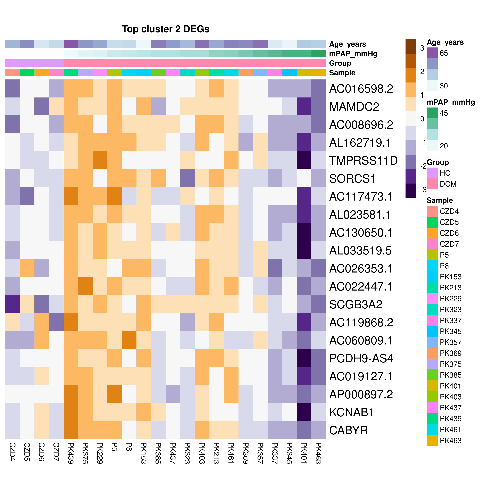
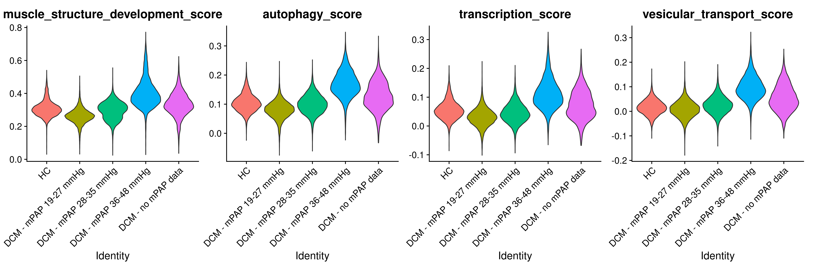

Differential abundance and differential expression analysis in cardiomyocytes
GinoBonazza (ginoandrea.bonazza@usz.ch)
01 August, 2024
Last updated: 2024-08-01
Checks: 7 0
Knit directory: DCM_snRNAseq/
This reproducible R Markdown analysis was created with workflowr (version 1.7.1). The Checks tab describes the reproducibility checks that were applied when the results were created. The Past versions tab lists the development history.
Great! Since the R Markdown file has been committed to the Git repository, you know the exact version of the code that produced these results.
Great job! The global environment was empty. Objects defined in the global environment can affect the analysis in your R Markdown file in unknown ways. For reproduciblity it’s best to always run the code in an empty environment.
The command set.seed(20240606) was run prior to running
the code in the R Markdown file. Setting a seed ensures that any results
that rely on randomness, e.g. subsampling or permutations, are
reproducible.
Great job! Recording the operating system, R version, and package versions is critical for reproducibility.
Nice! There were no cached chunks for this analysis, so you can be confident that you successfully produced the results during this run.
Great job! Using relative paths to the files within your workflowr project makes it easier to run your code on other machines.
Great! You are using Git for version control. Tracking code development and connecting the code version to the results is critical for reproducibility.
The results in this page were generated with repository version 9e4b482. See the Past versions tab to see a history of the changes made to the R Markdown and HTML files.
Note that you need to be careful to ensure that all relevant files for
the analysis have been committed to Git prior to generating the results
(you can use wflow_publish or
wflow_git_commit). workflowr only checks the R Markdown
file, but you know if there are other scripts or data files that it
depends on. Below is the status of the Git repository when the results
were generated:
Ignored files:
Ignored: .Rhistory
Ignored: .Rproj.user/
Untracked files:
Untracked: analysis/omnipathr-log/
Untracked: code/Add_metadata.R
Untracked: code/Check DYSF.R
Untracked: code/Clustering_genes.R
Untracked: code/DE_5_percent.Rmd
Untracked: code/DE_5_percent.html
Untracked: code/DE_5_percent/
Untracked: code/DE_CM_test1.R
Untracked: code/DE_no_401.Rmd
Untracked: code/DE_no_401.html
Untracked: code/DE_no_401/
Untracked: code/Differential abundance test1.R
Untracked: code/Differential_Expression_edgeR_All.Rmd
Untracked: code/Differential_Expression_edgeR_All_2.Rmd
Untracked: code/Differential_Expression_edgeR_All_2.html
Untracked: code/Differential_Expression_edgeR_All_Age.Rmd
Untracked: code/Differential_Expression_edgeR_All_Age_2.Rmd
Untracked: code/Differential_Expression_edgeR_All_Age_2.html
Untracked: code/Differential_Expression_edgeR_All_groups.Rmd
Untracked: code/Differential_Expression_edgeR_All_groups.html
Untracked: code/Differential_Expression_edgeR_All_groups_2.Rmd
Untracked: code/Differential_Expression_edgeR_All_groups_2.html
Untracked: code/Differential_Expression_edgeR_All_groups_3.Rmd
Untracked: code/Differential_Expression_edgeR_All_groups_3.html
Untracked: code/PCA and CCA analysis test.R
Untracked: code/Pseudobulk DCM HC.R
Untracked: code/QC_integration_annotation_orig.Rmd
Untracked: code/UpSet_plot_DEGs.Rmd
Untracked: code/Volcano_highlighted_genes.R
Untracked: code/old.R
Untracked: core
Untracked: data/Cellbender_output/
Untracked: data/Cellranger_output/
Untracked: data/DCM_Clinical_data.xlsx
Untracked: data/DCM_Clinical_data_26.xlsx
Untracked: data/Raw/
Untracked: omnipathr-log/
Untracked: output/Cardiomyocytes_DA_DE/
Untracked: output/Cardiomyocytes_DA_DE_26/
Untracked: output/Cardiomyocytes_subclustering/
Untracked: output/Cardiomyocytes_subclustering_26/
Untracked: output/Differential_expression_edgeR_All/
Untracked: output/Differential_expression_edgeR_All_Age/
Untracked: output/QC_integration_annotation/
Untracked: output/QC_integration_annotation_26/
Unstaged changes:
Modified: analysis/Cardiomyocytes_DA_DE.Rmd
Deleted: analysis/Differential_Expression_edgeR_All.Rmd
Deleted: analysis/Differential_Expression_edgeR_All_Age.Rmd
Note that any generated files, e.g. HTML, png, CSS, etc., are not included in this status report because it is ok for generated content to have uncommitted changes.
These are the previous versions of the repository in which changes were
made to the R Markdown
(analysis/Cardiomyocytes_DA_DE_26.Rmd) and HTML
(docs/Cardiomyocytes_DA_DE_26.html) files. If you’ve
configured a remote Git repository (see ?wflow_git_remote),
click on the hyperlinks in the table below to view the files as they
were in that past version.
| File | Version | Author | Date | Message |
|---|---|---|---|---|
| Rmd | 9e4b482 | GinoBonazza | 2024-08-01 | wflow_publish("analysis/Cardiomyocytes_DA_DE_26.Rmd") |
Setup
# Get current file name to make folder
current_file <- "Cardiomyocytes_DA_DE_26"
# Load libraries
library(here)
library(readr)
library(readxl)
library(xlsx)
library(Seurat)
library(DropletUtils)
library(Matrix)
library(scDblFinder)
library(scCustomize)
library(dplyr)
library(ggplot2)
library(magrittr)
library(tidyverse)
library(reshape2)
library(S4Vectors)
library(SingleCellExperiment)
library(pheatmap)
library(png)
library(gridExtra)
library(knitr)
library(scales)
library(RColorBrewer)
library(Matrix.utils)
library(tibble)
library(ggplot2)
library(scater)
library(patchwork)
library(statmod)
library(ArchR)
library(clustree)
library(harmony)
library(gprofiler2)
library(clusterProfiler)
library(org.Hs.eg.db)
library(AnnotationHub)
library(ReactomePA)
library(statmod)
library(edgeR)
library(speckle)
library(EnhancedVolcano)
library(decoupleR)
library(OmnipathR)
library(dorothea)
library(enrichplot)
library(png)
#Output paths
output_dir_data <- here::here("output", current_file)
if (!dir.exists(output_dir_data)) dir.create(output_dir_data)
if (!dir.exists(here::here("docs", "figure"))) dir.create(here::here("docs", "figure"))
output_dir_figs <- here::here("docs", "figure", paste0(current_file, ".Rmd"))
if (!dir.exists(output_dir_figs)) dir.create(output_dir_figs)Load cardiomyocytes dataset
CM <- readRDS(here::here("output", "Cardiomyocytes_subclustering_26", "CM.rds"))DefaultAssay(CM) <- "RNA"
CM <- NormalizeData(CM)Differential abundance analysis
#Prepare matadata for differential abundance and differential expression testing
metadata <- CM@meta.data %>%
dplyr::select(Sample:CO_l.min) %>%
unique() %>%
dplyr::select(-LVID_mm, -RVIT_mm)
metadata <- metadata %>%
dplyr::select(1:3, 5, 6, 4, 7:ncol(metadata)) %>%
dplyr::arrange(match(Sample, names(table(CM$Sample))))
rownames(metadata) <- metadata$Sample
# Check if metadata$Sample matches names(table(CM$Sample))
all.equal(metadata$Sample, names(table(CM$Sample)))[1] TRUE
head(metadata) Sample Batch_processing Batch_sequencing Sex Group Age_years LVEF_percentCZD4 CZD4 Batch8 Batch7_seq M HC 46 NA CZD5 CZD5 Batch8 Batch7_seq M HC 55 NA CZD6 CZD6 Batch8 Batch7_seq M HC 33 NA CZD7 CZD7 Batch8 Batch7_seq M HC 37 NA P3 P3 Batch6 Batch5_seq M DCM 19 10 P5 P5 Batch7 Batch6_seq M DCM 36 15 LVEDD_mm RVID_mm TAPSE_mm RAA_cm2 RVS_cm.s RVSP_mmHg sPAP_mmHg mPAP_mmHg CZD4 NA NA NA NA NA NA NA NA CZD5 NA NA NA NA NA NA NA NA CZD6 NA NA NA NA NA NA NA NA CZD7 NA NA NA NA NA NA NA NA P3 76 39 13 25 7 35 NA NA P5 80 41 9 19 6 24 35 25 PCW_mmHg PVR_WU TPG_mmHg CO_l.min CZD4 NA NA NA NA CZD5 NA NA NA NA CZD6 NA NA NA NA CZD7 NA NA NA NA P3 NA NA NA NA P5 22 0.68 3 4.4
# Filter for Group == "DCM"
metadata_DCM <- metadata %>%
dplyr::filter(Group == "DCM")
head(metadata_DCM) Sample Batch_processing Batch_sequencing Sex Group Age_years LVEF_percentP3 P3 Batch6 Batch5_seq M DCM 19 10 P5 P5 Batch7 Batch6_seq M DCM 36 15 P8 P8 Batch6 Batch5_seq M DCM 37 10 PK153 PK153 Batch7 Batch6_seq M DCM 28 18 PK213 PK213 Batch6 Batch5_seq M DCM 49 10 PK229 PK229 Batch6 Batch5_seq M DCM 49 30 LVEDD_mm RVID_mm TAPSE_mm RAA_cm2 RVS_cm.s RVSP_mmHg sPAP_mmHg mPAP_mmHg P3 76 39 13 25 7 35 NA NA P5 80 41 9 19 6 24 35 25 P8 98 45 13 30 6 28 37 26 PK153 72 28 24 12 NA 37 41 27 PK213 92 54 9 26 9 61 48 33 PK229 69 30 20 23 11 33 33 22 PCW_mmHg PVR_WU TPG_mmHg CO_l.min P3 NA NA NA NA P5 22 0.68 3 4.4 P8 20 1.50 6 4.0 PK153 23 1.27 4 3.1 PK213 20 4.80 13 2.7 PK229 15 1.39 7 5.0
# Initialize an empty data frame for storing differential abundance results
differential_abundance <- data.frame()
props <- getTransformedProps(CM$cell_state, CM$Sample, transform="logit")
# Loop through each metadata column from Age_years to CO_l.min
for (i in 6:(length(metadata_DCM))) {
metadata_subset <- metadata_DCM[complete.cases(metadata_DCM[[i]]),]
props_subset <- props
props_subset$Counts <- props$Counts[, metadata_subset$Sample, drop = FALSE]
props_subset$TransformedProps <- props$TransformedProps[, metadata_subset$Sample, drop = FALSE]
props_subset$Proportions <- props$Proportions[, metadata_subset$Sample, drop = FALSE]
metadata_subset <- metadata_subset %>%
arrange(Sample, colnames(props_subset$Proportions))
design <- model.matrix(~ metadata_subset[[i]])
fit <- lmFit(props_subset$TransformedProps, design)
fit <- eBayes(fit, robust=TRUE)
differential_abundance_temp <- topTable(fit, n = Inf, coef = 2)
differential_abundance_temp$metadata <- colnames(metadata_subset[i])
differential_abundance_temp$cell_state <- rownames(differential_abundance_temp)
differential_abundance <- rbind(differential_abundance, differential_abundance_temp)
}
# Clean up the environment
rm(metadata_subset, props_subset, design, fit, differential_abundance_temp)
# Reset row names and arrange the results by adjusted p-value
rownames(differential_abundance) <- NULL
differential_abundance <- dplyr::arrange(differential_abundance, adj.P.Val)
head(differential_abundance, 10) logFC AveExpr t P.Value adj.P.Val B1 -0.03733780 -3.09372076 -3.800660 0.000784868 0.00392434 -1.104509 2 0.05164398 -3.09372076 2.727156 0.011504506 0.05752253 -3.153784 3 0.02064891 -1.22887005 2.620690 0.014741573 0.07370786 -4.047930 4 -0.02099043 -1.11737052 -2.553624 0.019177416 0.09588708 -4.264893 5 0.02072336 -1.22887005 2.110358 0.044606428 0.11151607 -4.893359 6 -0.09458635 -2.59521451 -2.202226 0.040434842 0.12531843 -3.774735 7 -0.08210370 -3.27080446 -2.094281 0.050127373 0.12531843 -3.950492 8 -0.02828231 -1.15033073 -2.250622 0.035607611 0.17803806 -4.429379 9 0.03061490 0.07673019 1.613590 0.123395678 0.20565946 -4.664097 10 -0.02965728 -1.15033073 -2.073388 0.050974137 0.25487068 -4.642614 metadata cell_state 1 LVEDD_mm CM5 2 LVEF_percent CM5 3 Age_years CM2 4 RVSP_mmHg CM2 5 LVEDD_mm CM2 6 TPG_mmHg CM4 7 TPG_mmHg CM5 8 sPAP_mmHg CM2 9 TPG_mmHg CM1 10 mPAP_mmHg CM2
metadata_subset <- metadata[complete.cases(metadata[["LVEDD_mm"]]),]
props_subset <- props
props_subset$Counts <- props$Counts[, metadata_subset$Sample, drop = FALSE]
props_subset$TransformedProps <- props$TransformedProps[, metadata_subset$Sample, drop = FALSE]
props_subset$Proportions <- props$Proportions[, metadata_subset$Sample, drop = FALSE]
metadata_subset <- metadata_subset %>%
arrange(Sample, colnames(props_subset$Proportions))
design <- model.matrix(~ metadata_subset$LVEDD_mm)
fit.prop <- lmFit(props_subset$Proportions,design)
par(mfrow=c(1,5), mar = c(5, 5, 3, 1))
for(i in seq(1,5,1)){
plot(metadata_subset$LVEDD_mm, props_subset$Proportions[i,], main = rownames(props_subset$Proportions)[i],
pch=16, cex=2, ylab="Proportions", xlab="LVEDD_mm", cex.lab=2, cex.axis=1.5,
cex.main=2.5)
abline(a=fit.prop$coefficients[i,1], b=fit.prop$coefficients[i,2], col=4,
lwd=1)
}
rm(metadata_subset, props_subset, design, fit.prop)metadata_subset <- metadata[complete.cases(metadata[["LVEF_percent"]]),]
props_subset <- props
props_subset$Counts <- props$Counts[, metadata_subset$Sample, drop = FALSE]
props_subset$TransformedProps <- props$TransformedProps[, metadata_subset$Sample, drop = FALSE]
props_subset$Proportions <- props$Proportions[, metadata_subset$Sample, drop = FALSE]
metadata_subset <- metadata_subset %>%
arrange(Sample, colnames(props_subset$Proportions))
design <- model.matrix(~ metadata_subset$LVEF_percent)
fit.prop <- lmFit(props_subset$Proportions,design)
par(mfrow=c(1,5), mar = c(5, 5, 3, 1))
for(i in seq(1,5,1)){
plot(metadata_subset$LVEF_percent, props_subset$Proportions[i,], main = rownames(props_subset$Proportions)[i],
pch=16, cex=2, ylab="Proportions", xlab="LVEF_percent", cex.lab=2, cex.axis=1.5,
cex.main=2.5)
abline(a=fit.prop$coefficients[i,1], b=fit.prop$coefficients[i,2], col=4,
lwd=1)
}
rm(metadata_subset, props_subset, design, fit.prop)metadata_subset <- metadata[complete.cases(metadata[["Age_years"]]),]
props_subset <- props
props_subset$Counts <- props$Counts[, metadata_subset$Sample, drop = FALSE]
props_subset$TransformedProps <- props$TransformedProps[, metadata_subset$Sample, drop = FALSE]
props_subset$Proportions <- props$Proportions[, metadata_subset$Sample, drop = FALSE]
metadata_subset <- metadata_subset %>%
arrange(Sample, colnames(props_subset$Proportions))
design <- model.matrix(~ metadata_subset$Age_years)
fit.prop <- lmFit(props_subset$Proportions,design)
par(mfrow=c(1,5), mar = c(5, 5, 3, 1))
for(i in seq(1,5,1)){
plot(metadata_subset$Age_years, props_subset$Proportions[i,], main = rownames(props_subset$Proportions)[i],
pch=16, cex=2, ylab="Proportions", xlab="Age_years", cex.lab=2, cex.axis=1.5,
cex.main=2.5)
abline(a=fit.prop$coefficients[i,1], b=fit.prop$coefficients[i,2], col=4,
lwd=1)
}
rm(metadata_subset, props_subset, design, fit.prop)metadata_subset <- metadata[complete.cases(metadata[["RVSP_mmHg"]]),]
props_subset <- props
props_subset$Counts <- props$Counts[, metadata_subset$Sample, drop = FALSE]
props_subset$TransformedProps <- props$TransformedProps[, metadata_subset$Sample, drop = FALSE]
props_subset$Proportions <- props$Proportions[, metadata_subset$Sample, drop = FALSE]
metadata_subset <- metadata_subset %>%
arrange(Sample, colnames(props_subset$Proportions))
design <- model.matrix(~ metadata_subset$RVSP_mmHg)
fit.prop <- lmFit(props_subset$Proportions,design)
par(mfrow=c(1,5), mar = c(5, 5, 3, 1))
for(i in seq(1,5,1)){
plot(metadata_subset$RVSP_mmHg, props_subset$Proportions[i,], main = rownames(props_subset$Proportions)[i],
pch=16, cex=2, ylab="Proportions", xlab="RVSP_mmHg", cex.lab=2, cex.axis=1.5,
cex.main=2.5)
abline(a=fit.prop$coefficients[i,1], b=fit.prop$coefficients[i,2], col=4,
lwd=1)
}
rm(metadata_subset, props_subset, design, fit.prop)design <- model.matrix(~ 0 + metadata$Group)
colnames(design) <- c("DCM", "HC")
mycontr <- makeContrasts(DCM-HC, levels=design)
differential_abundance_HC <- propeller.ttest(props, design, contrasts = mycontr, robust=TRUE, trend=FALSE, sort=TRUE)
differential_abundance_HCPropMean.DCM PropMean.HC PropRatio Tstatistic P.Value FDRCM3 0.11135354 0.03836732 2.9023016 3.800582 0.0006739595 0.003369797 CM4 0.08662428 0.02831785 3.0589987 3.202724 0.0032613900 0.008153475 CM1 0.50911696 0.57790022 0.8809773 -1.527054 0.1374288591 0.229048098 CM2 0.24032230 0.29095689 0.8259722 -1.002228 0.3244063073 0.405507884 CM5 0.05258291 0.06445772 0.8157738 -0.479165 0.6353640356 0.635364036
par(mfrow = c(1, 5), mar = c(3, 5, 3, 1))
for (i in seq(1, 5, 1)) {
stripchart(props$Proportions[i,] ~ metadata$Group,
vertical = TRUE, pch = 16, method = "jitter",
col = c("orange", "purple"),
cex = 2, ylab = "Proportions", cex.lab = 2, cex.axis = 2)
title(rownames(props$Proportions)[i], cex.main = 2.5)
}
rm(design, mycontr)Differential expression analysis
Remove genes expressed in <1% of cells and MT and RP genes
percent_stats <- Percent_Expressing(seurat_object = CM, features = rownames(CM), assay = "RNA", entire_object = TRUE)
percent_stats$gene <- rownames(percent_stats)
keep_genes <- rownames(dplyr::filter(percent_stats, All_Cells > 1))
data <- CM[which(rownames(CM) %in% keep_genes),]
rm(keep_genes)Create and prepare pseudobulk object for differential expression analysis
pseudocounts <- Seurat2PB(data, sample="Sample", cluster = "cell_type")
colnames(pseudocounts) <- pseudocounts$samples$sample
keep_samples <- pseudocounts$samples$lib.size > 5e4
pseudocounts <- pseudocounts[, keep_samples]
keep_genes <- filterByExpr(pseudocounts)
pseudocounts <- pseudocounts[keep_genes, ]
rm(keep_samples, keep_genes, data)Create empty objects for the DE output
results <- list()
signif <- list()
volcano <- list()
n_de_genes <- data.frame()pseudocounts_DCM <- pseudocounts[, metadata_DCM$Sample]
all.equal(metadata_DCM$Sample, colnames(pseudocounts_DCM$counts))[1] TRUE
for (i in 6:(length(metadata_DCM))) {
metadata_subset <- metadata_DCM[complete.cases(metadata_DCM[[i]]),]
metadata_subset[,i] <- rescale(metadata_subset[,i])
design <- model.matrix(~ metadata_subset[[i]])
colnames(design)[2] <- colnames(metadata_subset[i])
pseudocounts_subset <- pseudocounts_DCM[, metadata_subset$Sample]
pseudocounts_subset <- normLibSizes(pseudocounts_subset)
pseudocounts_subset <- estimateDisp(pseudocounts_subset, design)
fit <- glmQLFit(pseudocounts_subset, design, robust=TRUE)
fit <- glmQLFTest(fit, coef = 2)
results[[i-5]] <- topTags(fit, n = Inf)$table
results[[i-5]] <- merge(results[[i-5]], percent_stats[, c("gene", "All_Cells")], by = "gene", all.x = FALSE)
signif[[i-5]] <- results[[i-5]] %>% dplyr::filter(FDR < 0.05, abs(logFC) > 0.5) %>%
dplyr::arrange(FDR)
names(results)[i-5] <- colnames(metadata_subset[i])
names(signif)[i-5] <- colnames(metadata_subset[i])
write.csv(results[[i-5]], file = here::here(output_dir_data, paste0("CM_Results_", colnames(metadata[i]), ".csv")), quote=F, row.names = F)
write.csv(signif[[i-5]], file = here::here(output_dir_data, paste0("CM_Significant_", colnames(metadata[i]), ".csv")), quote=F, row.names = F)
n_de_genes_temp <- data.frame(metadata = colnames(metadata_subset[i]),
n_upregulated = sum(signif[[i-5]]$logFC > 0.5),
n_downregulated = sum(signif[[i-5]]$logFC < -0.5),
n_tot = nrow(signif[[i-5]])
)
n_de_genes <- rbind(n_de_genes, n_de_genes_temp)
volcano[[i-5]] <- EnhancedVolcano(results[[i-5]],
lab = results[[i-5]]$gene,
x = "logFC",
y = "FDR",
labSize = 0,
titleLabSize = 16,
subtitleLabSize = 14,
axisLabSize = 12,
captionLabSize = 9,
pointSize = 0.5,
FCcutoff = 0.5,
pCutoff = 0.05,
ylim = c(0, 3.5),
col = c("black", "black", "black", "red"),
colAlpha = 1,
drawConnectors = FALSE,
subtitle = NULL,
title = paste0("Cardiomyocytes", "\n", colnames(metadata_subset[i]), "\nn = ", nrow(metadata_subset))
) + theme(legend.position = "none")
names(volcano)[i-5] <- colnames(metadata_subset[i])
}
rm(metadata_subset, design, pseudocounts_subset, fit, n_de_genes_temp)print((volcano[[1]] | volcano[[2]] | volcano[[3]] | volcano[[4]] | volcano[[5]] | volcano[[6]] | volcano[[7]]) /
(volcano[[8]] | volcano[[9]] | volcano[[10]] | volcano[[11]] | volcano[[12]] | volcano[[13]] | volcano[[14]]))
Over-representation analysis
# Calculate gene counts across cells
gene_counts <- rowSums(CM@assays$RNA@counts > 0)
# Filter genes to include only those expressed in at least 3 cells
universe_genes <- names(gene_counts[gene_counts >= 3])
write.csv(as.data.frame(universe_genes), here::here(output_dir_data, "CM_universe_genes.csv"))
# Convert universe gene symbols to Entrez IDs
universe_entrez <- bitr(universe_genes, fromType = "SYMBOL", toType = "ENTREZID", OrgDb = org.Hs.eg.db)$ENTREZID
write.csv(as.data.frame(universe_entrez), here::here(output_dir_data, "CM_universe_entrez.csv"))
rm(gene_counts)up_genes <- filter(signif[["mPAP_mmHg"]], logFC > 0.5)$gene
up_genes <- bitr(up_genes, fromType="SYMBOL", toType="ENTREZID", OrgDb="org.Hs.eg.db")$ENTREZID
down_genes <- filter(signif[["mPAP_mmHg"]], logFC < -0.5)$gene
down_genes <- bitr(down_genes, fromType="SYMBOL", toType="ENTREZID", OrgDb="org.Hs.eg.db")$ENTREZIDreorder_GO_by_pvalue <- function(enrichGO_result) {
go_results <- enrichGO_result@result
go_results_sorted <- go_results[order(go_results$p.adjust), ]
enrichGO_result@result <- go_results_sorted
return(enrichGO_result)
}
mPAP_GO_up <- enrichGO(up_genes, OrgDb = "org.Hs.eg.db", universe = universe_entrez, ont = "ALL", readable = TRUE)
mPAP_GO_up <- gsfilter(mPAP_GO_up, by = 'Count', min = 3)
mPAP_GO_up <- reorder_GO_by_pvalue(mPAP_GO_up)
mPAP_GO_down <- enrichGO(down_genes, OrgDb = "org.Hs.eg.db", universe = universe_entrez, ont = "ALL", readable = TRUE)
mPAP_GO_down <- gsfilter(mPAP_GO_down, by = 'Count', min = 3)
mPAP_GO_down <- reorder_GO_by_pvalue(mPAP_GO_down)
p1 <- dotplot(mPAP_GO_up, showCategory = 10, title = paste0("GO - Over-representation analysis", "\nHigh mPAP - associated genes"), label_format = 27, font.size = 15) +
theme(plot.title = element_text( face = "bold", size = 18, hjust = 0.5),
axis.text.y = element_text(face = "bold"))
p2 <- dotplot(mPAP_GO_down, showCategory = 10, title = paste0("GO - Over-representation analysis", "\nLow mPAP - associated genes"), label_format = 27, font.size = 15) +
theme(plot.title = element_text( face = "bold", size = 18, hjust = 0.5),
axis.text.y = element_text(face = "bold"))
print(p1|p2)
mPAP_GO_simplified_up <- simplify(
mPAP_GO_up,
cutoff = 0.75,
by = "p.adjust",
select_fun = min,
measure = "Wang",
semData = NULL
)
mPAP_GO_simplified_down <- simplify(
mPAP_GO_down,
cutoff = 0.75,
by = "p.adjust",
select_fun = min,
measure = "Wang",
semData = NULL
)
p1 <- dotplot(mPAP_GO_simplified_up, showCategory = 10, title = paste0("GO - Over-representation analysis", "\nHigh mPAP - associated genes"), label_format = 27, font.size = 15) +
theme(plot.title = element_text( face = "bold", size = 18, hjust = 0.5),
axis.text.y = element_text(face = "bold"))
p2 <- dotplot(mPAP_GO_simplified_down, showCategory = 10, title = paste0("GO - Over-representation analysis", "\nLow mPAP - associated genes"), label_format = 27, font.size = 15) +
theme(plot.title = element_text( face = "bold", size = 18, hjust = 0.5),
axis.text.y = element_text(face = "bold"))
print(p1 | p2)
mPAP_KEGG_up <- enrichKEGG(up_genes, organism = 'hsa', universe = universe_entrez)
mPAP_KEGG_up <- gsfilter(mPAP_KEGG_up, by = 'Count', min = 3)
mPAP_KEGG_down <- enrichKEGG(down_genes, organism = 'hsa', universe = universe_entrez)
mPAP_KEGG_down <- gsfilter(mPAP_KEGG_down, by = 'Count', min = 3)
p1 <- dotplot(mPAP_KEGG_up, showCategory = 10, title = paste0("KEGG Pathways", "\nHigh mPAP - associated genes"), label_format = 27, font.size = 15) +
theme(plot.title = element_text( face = "bold", size = 18, hjust = 0.5),
axis.text.y = element_text(face = "bold"))
print(p1)
mPAP_REACTOME_up <- enrichPathway(up_genes, organism = 'human', universe = universe_entrez, readable = TRUE, pvalueCutoff = 0.1)
mPAP_REACTOME_up <- gsfilter(mPAP_REACTOME_up, by = 'Count', min = 3)
mPAP_REACTOME_down <- enrichPathway(down_genes, organism = 'human', universe = universe_entrez, readable = TRUE, pvalueCutoff = 0.1)
mPAP_REACTOME_down <- gsfilter(mPAP_REACTOME_down, by = 'Count', min = 3)
p1 <- dotplot(mPAP_REACTOME_up, showCategory = 10, title = paste0("REACTOME", "\nHigh mPAP - associated genes"), label_format = 27, font.size = 15) +
theme(plot.title = element_text( face = "bold", size = 18, hjust = 0.5),
axis.text.y = element_text(face = "bold"))
print(p1)
rm(mPAP_GO_up, mPAP_GO_down, mPAP_GO_simplified_up, mPAP_GO_simplified_down, mPAP_KEGG_up, mPAP_KEGG_down, mPAP_REACTOME_up, mPAP_REACTOME_down)Gene set enrichment analysis
ranked_genes <- results[["mPAP_mmHg"]]
ranked_genes$metric <- ranked_genes$logFC*-log10(ranked_genes$PValue)
entrezid <- bitr(ranked_genes$gene, fromType="SYMBOL", toType="ENTREZID", OrgDb="org.Hs.eg.db", drop = TRUE)
ranked_genes <- merge(ranked_genes, entrezid, by.x = "gene", by.y = "SYMBOL")
ranked_genes <- ranked_genes[!duplicated(ranked_genes$metric), ]
genelist <- ranked_genes$metric
names(genelist) <- ranked_genes$ENTREZID
genelist <- genelist[order(genelist, decreasing = T)]gseaGO_all <- gseGO(geneList = genelist,
OrgDb = org.Hs.eg.db,
ont = "ALL",
keyType = "ENTREZID",
nPermSimple = 1000000,
minGSSize = 10)
gseaGO_all <- reorder_GO_by_pvalue(gseaGO_all)gseaGO_all_simplified <- simplify(
gseaGO_all,
cutoff = 0.75,
by = "p.adjust",
select_fun = min,
measure = "Wang",
semData = NULL
)
p1 <- dotplot(gseaGO_all_simplified, showCategory = 10, split=".sign", title = paste0("GO Enrichment Analysis", "\n mPAP-associated genes"), label_format = 30, font.size = 15) +
theme(plot.title = element_text( face = "bold", size = 18, hjust = 0.5),
axis.text.y = element_text(face = "bold"),
strip.text = element_text(face = "bold", size = 18)) +
facet_grid(.~.sign)
print(p1)
classify_terms <- function(df) {
df$sign <- ifelse(df$NES > 0, "activated", "suppressed")
return(df)
}
gseaGO_all_simplified@result <- classify_terms(gseaGO_all_simplified@result)
# Split the GSEA results
activated_terms <- subset(gseaGO_all_simplified@result, sign == "activated")
suppressed_terms <- subset(gseaGO_all_simplified@result, sign == "suppressed")
# Create two separate enrichResult objects
gseaGO_all_activated <- gseaGO_all_simplified
gseaGO_all_activated@result <- activated_terms
gseaGO_all_activated <- pairwise_termsim(gseaGO_all_activated)
gseaGO_all_suppressed <- gseaGO_all_simplified
gseaGO_all_suppressed@result <- suppressed_terms
gseaGO_all_suppressed <- pairwise_termsim(gseaGO_all_suppressed)
# Plot activated terms
p1 <- emapplot(gseaGO_all_activated, showCategory = 100, cex_label_category = 0.7, min_edge = 0.15) +
ggtitle("Activated Terms") +
theme(plot.title = element_text(face = "bold", size = 18, hjust = 0.5))
# Plot suppressed terms
p2 <- emapplot(gseaGO_all_suppressed, showCategory = 100, cex_label_category = 0.7, min_edge = 0.15) +
ggtitle("Suppressed Terms") +
theme(plot.title = element_text(face = "bold", size = 18, hjust = 0.5))
# Combine the plots
combined_plot <- p1 | p2
print(combined_plot)
p1 <- ridgeplot(gseaGO_all_simplified, showCategory = 20) + labs(x = "enrichment distribution")
print(p1)
gseaKEGG <- gseKEGG(geneList = genelist,
organism = "hsa",
keyType = "kegg",
nPermSimple = 100000)p1 <- dotplot(gseaKEGG, showCategory = 10, split=".sign", title = paste0("GSEA\nKEGG Pathways", "\n mPAP-associated genes"), label_format = 30, font.size = 15) +
theme(plot.title = element_text( face = "bold", size = 18, hjust = 0.5),
axis.text.y = element_text(face = "bold"),
strip.text = element_text(face = "bold", size = 18)) +
facet_grid(.~.sign)
print(p1)
gseaKEGG@result <- classify_terms(gseaKEGG@result)
# Split the GSEA results
activated_terms <- subset(gseaKEGG@result, sign == "activated")
suppressed_terms <- subset(gseaKEGG@result, sign == "suppressed")
# Create two separate enrichResult objects
gseaKEGG_activated <- gseaKEGG
gseaKEGG_activated@result <- activated_terms
gseaKEGG_suppressed <- gseaKEGG
gseaKEGG_suppressed@result <- suppressed_terms
# Plot activated terms
p1 <- emapplot(pairwise_termsim(gseaKEGG_activated), showCategory = 20, cex_label_category = 0.7, min_edge = 0.15) +
ggtitle("Activated Terms") +
theme(plot.title = element_text(face = "bold", size = 18, hjust = 0.5))
# Plot suppressed terms
p2 <- emapplot(pairwise_termsim(gseaKEGG_suppressed), showCategory = 20, cex_label_category = 0.7, min_edge = 0.15) +
ggtitle("Suppressed Terms") +
theme(plot.title = element_text(face = "bold", size = 18, hjust = 0.5))
# Combine the plots
combined_plot <- p1 | p2
print(combined_plot)
p1 <- ridgeplot(gseaKEGG, showCategory = 20) + labs(x = "enrichment distribution")
print(p1)
gseaGO_all_activated_df <- setReadable(gseaGO_all_activated, OrgDb = org.Hs.eg.db)
gseaGO_all_activated_df <- gseaGO_all_activated_df@resultHeatmaps
metadata_mPAP <- metadata[complete.cases(metadata[["mPAP_mmHg"]]),]
pseudocounts_mPAP <- pseudocounts[, metadata_mPAP$Sample]
pseudocounts_mPAP <- normLibSizes(pseudocounts_mPAP)
counts_mPAP <- cpm(pseudocounts_mPAP, log = TRUE)## Set a color-blind friendly palette
heat_colors <- rev(brewer.pal(11, "PuOr"))
metadata_heatmap <- metadata_mPAP %>% dplyr::select(Sample, mPAP_mmHg, Batch_processing, Age_years) %>% dplyr::arrange(mPAP_mmHg)
DEGs_mPAP <- signif[["mPAP_mmHg"]]
sig_counts <- counts_mPAP[rownames(counts_mPAP) %in% DEGs_mPAP$gene, ]
sig_counts <- sig_counts[, metadata_heatmap$Sample, drop = FALSE]
## Run pheatmap using the metadata data frame for the annotation
pheatmap(sig_counts,
color = heat_colors,
cluster_rows = TRUE,
show_rownames = FALSE,
annotation_col = metadata_heatmap,
border_color = NA,
fontsize = 10,
scale = "row",
cluster_cols=F,
fontsize_row = 10,
height = 20) rm(metadata_heatmap, sig_counts)metadata_heatmap <- metadata_mPAP %>% dplyr::select(Sample, mPAP_mmHg, Batch_processing, Age_years) %>% dplyr::arrange(mPAP_mmHg)
DEGs_mPAP_top <- DEGs_mPAP
DEGs_mPAP_top <- DEGs_mPAP_top %>%
dplyr::filter(All_Cells > 5)
DEGs_mPAP_top_up <- DEGs_mPAP_top %>%
dplyr::filter(logFC > 2) %>%
dplyr::arrange(FDR)
DEGs_mPAP_top_down <- DEGs_mPAP_top %>%
dplyr::filter(logFC < -2) %>%
dplyr::arrange(FDR)
DEGs_mPAP_top <- dplyr::bind_rows(head(DEGs_mPAP_top_up, 20), head(DEGs_mPAP_top_down, 20))
rm(DEGs_mPAP_top_up, DEGs_mPAP_top_down)
sig_counts <- counts_mPAP[rownames(counts_mPAP) %in% DEGs_mPAP_top$gene, ]
sig_counts <- sig_counts[, metadata_heatmap$Sample, drop = FALSE]
## Run pheatmap using the metadata data frame for the annotation
pheatmap(sig_counts,
color = heat_colors,
cluster_rows = TRUE,
annotation_col = metadata_heatmap,
border_color = NA,
fontsize = 10,
scale = "row",
cluster_cols=F,
fontsize_row = 15,
height = 20,
show_rownames = T) 
rm(metadata_heatmap, sig_counts)metadata_heatmap <- metadata %>%
dplyr::filter(Sample %in% metadata_mPAP$Sample | Group == "HC")
metadata_heatmap <- metadata_heatmap %>%
mutate(Group = factor(Group, levels = c("HC", "DCM"))) %>%
arrange(Group, mPAP_mmHg) %>%
dplyr::select(Sample, Group, mPAP_mmHg, Batch_processing, Age_years)
pseudocounts_mPAP_HC <- pseudocounts[, metadata_heatmap$Sample]
pseudocounts_mPAP_HC <- normLibSizes(pseudocounts_mPAP_HC)
counts_mPAP_HC <- cpm(pseudocounts_mPAP_HC, log = TRUE)
sig_counts <- counts_mPAP_HC[rownames(counts_mPAP_HC) %in% DEGs_mPAP$gene, ]
sig_counts <- sig_counts[, metadata_heatmap$Sample, drop = FALSE]
## Run pheatmap using the metadata data frame for the annotation
pheatmap(sig_counts,
color = heat_colors,
cluster_rows = TRUE,
show_rownames = FALSE,
annotation_col = metadata_heatmap,
border_color = NA,
fontsize = 10,
scale = "row",
cluster_cols=F,
fontsize_row = 10,
height = 20) 
rm(metadata_heatmap, sig_counts)metadata_heatmap <- metadata %>%
dplyr::filter(Sample %in% metadata_mPAP$Sample | Group == "HC")
metadata_heatmap <- metadata_heatmap %>%
mutate(Group = factor(Group, levels = c("HC", "DCM"))) %>%
arrange(Group, mPAP_mmHg) %>%
dplyr::select(Sample, Group, mPAP_mmHg, Batch_processing, Age_years)
pseudocounts_mPAP_HC <- pseudocounts[, metadata_heatmap$Sample]
pseudocounts_mPAP_HC <- normLibSizes(pseudocounts_mPAP_HC)
counts_mPAP_HC <- cpm(pseudocounts_mPAP_HC, log = TRUE)
sig_counts <- counts_mPAP_HC[rownames(counts_mPAP_HC) %in% DEGs_mPAP_top$gene, ]
sig_counts <- sig_counts[, metadata_heatmap$Sample, drop = FALSE]
## Run pheatmap using the metadata data frame for the annotation
pheatmap(sig_counts,
color = heat_colors,
cluster_rows = TRUE,
annotation_col = metadata_heatmap,
border_color = NA,
fontsize = 10,
scale = "row",
cluster_cols=F,
fontsize_row = 15,
height = 20,
show_rownames = T) 
DEGs hierarchical clustering
# Filter and arrange metadata
metadata_mPAP_HC <- metadata %>%
dplyr::filter(Sample %in% metadata_mPAP$Sample | Group == "HC") %>%
dplyr::mutate(Group = factor(Group, levels = c("HC", "DCM"))) %>%
dplyr::arrange(Group, mPAP_mmHg) %>%
dplyr::select(Sample, Group, mPAP_mmHg, Batch_processing, Age_years)
# Normalize pseudocounts and calculate log CPM
pseudocounts_mPAP_HC <- pseudocounts[, metadata_mPAP_HC$Sample]
pseudocounts_mPAP_HC <- normLibSizes(pseudocounts_mPAP_HC)
counts_mPAP_HC <- edgeR::cpm(pseudocounts_mPAP_HC, log = TRUE)
# Filter counts matrix by DEGs
counts_matrix <- counts_mPAP_HC[rownames(counts_mPAP_HC) %in% DEGs_mPAP$gene, ]
# Convert to long format and add Condition dividing DCM samples in 3 groups based on mPAP
counts_tibble <- counts_matrix %>%
as.data.frame() %>%
tibble::rownames_to_column(var = "gene") %>%
tidyr::pivot_longer(-gene, names_to = "sample", values_to = "log_pseudocounts") %>%
dplyr::mutate(Condition = dplyr::case_when(
sample %in% c("CZD4", "CZD5", "CZD6", "CZD7") ~ "HC",
sample %in% c("PK439", "PK375", "PK229", "P5", "P8", "PK153") ~ "DCM - Mild PH",
sample %in% c("PK385", "PK437", "PK323", "PK403", "PK213", "PK461") ~ "DCM - Moderate PH",
sample %in% c("PK369", "PK357", "PK337", "PK345", "PK401", "PK463") ~ "DCM - Severe PH"
))
# Compute the mean log counts for each gene and condition
mean_tibble <- counts_tibble %>%
dplyr::group_by(gene, Condition) %>%
dplyr::summarise(mean_log_counts = mean(log_pseudocounts, na.rm = TRUE), .groups = 'drop')
# Convert to wide format
wide_mean_tibble <- mean_tibble %>%
tidyr::pivot_wider(names_from = Condition, values_from = mean_log_counts)
# Convert the wide tibble to a matrix and transpose
mean_matrix <- wide_mean_tibble %>%
tibble::column_to_rownames(var = "gene") %>%
as.matrix()
mean_matrix <- mean_matrix %>%
t() %>%
scale() %>%
t()
# Perform hierarchical clustering
gene_dist <- dist(mean_matrix)
gene_hclust <- hclust(gene_dist, method = "complete")
# Plot the dendrogram
plot(gene_hclust, labels = FALSE)
abline(h = 3, col = "brown", lwd = 2) # Add horizontal line to illustrate cutting dendrogram# Cut the dendrogram into 4 clusters
gene_cluster <- cutree(gene_hclust, k = 4) %>%
tibble::enframe() %>%
dplyr::rename(gene = name, cluster = value)
# Convert scaled matrix to long format and join with gene_cluster
mean_tibble_cluster <- mean_matrix %>%
as.data.frame() %>%
tibble::rownames_to_column(var = "gene") %>%
tidyr::pivot_longer(-gene, names_to = "Condition", values_to = "scaled_log_pseudocounts") %>%
dplyr::inner_join(gene_cluster, by = "gene")
# Set factor levels for Condition
mean_tibble_cluster$Condition <- factor(mean_tibble_cluster$Condition, levels = c("HC", "DCM - Mild PH", "DCM - Moderate PH", "DCM - Severe PH"))
# Calculate the number of genes per cluster
cluster_counts <- mean_tibble_cluster %>%
dplyr::group_by(cluster) %>%
dplyr::summarise(gene_count = dplyr::n_distinct(gene))
# Create a named vector for custom facet labels
custom_labels <- setNames(paste("Cluster", cluster_counts$cluster, "-", cluster_counts$gene_count, "genes"), cluster_counts$cluster)
# Plot the data with custom facet labels
mean_tibble_cluster %>%
ggplot(aes(Condition, scaled_log_pseudocounts)) +
geom_line(aes(group = gene), alpha = 0.2) +
geom_line(stat = "summary", fun = "median", colour = "brown", size = 1.5, aes(group = 1)) +
facet_grid(cols = vars(cluster), labeller = as_labeller(custom_labels)) +
theme(
strip.text = element_text(face = "bold", size = 12), # Make facet labels bold
axis.text.x = element_text(angle = 45, hjust = 1, size = 10) # Rotate x-axis labels by 45 degrees
)
Over-representation DEGs clusters
DEGs_clusters <- list()
DEGs_clusters[["cluster1"]] <- unique(dplyr::filter(mean_tibble_cluster, cluster == "1")$gene)
DEGs_clusters[["cluster2"]] <- unique(dplyr::filter(mean_tibble_cluster, cluster == "2")$gene)
DEGs_clusters[["cluster3"]] <- unique(dplyr::filter(mean_tibble_cluster, cluster == "3")$gene)
DEGs_clusters[["cluster4"]] <- unique(dplyr::filter(mean_tibble_cluster, cluster == "4")$gene)DEGs_clusters_entrez <- list()
DEGs_clusters_entrez[["cluster1"]] <- bitr(DEGs_clusters[["cluster1"]], fromType="SYMBOL", toType="ENTREZID", OrgDb="org.Hs.eg.db")$ENTREZID
DEGs_clusters_entrez[["cluster2"]] <- bitr(DEGs_clusters[["cluster2"]], fromType="SYMBOL", toType="ENTREZID", OrgDb="org.Hs.eg.db")$ENTREZID
DEGs_clusters_entrez[["cluster3"]] <- bitr(DEGs_clusters[["cluster3"]], fromType="SYMBOL", toType="ENTREZID", OrgDb="org.Hs.eg.db")$ENTREZID
DEGs_clusters_entrez[["cluster4"]] <- bitr(DEGs_clusters[["cluster4"]], fromType="SYMBOL", toType="ENTREZID", OrgDb="org.Hs.eg.db")$ENTREZIDcluster1_GO <- enrichGO(DEGs_clusters_entrez[["cluster1"]], OrgDb = "org.Hs.eg.db", universe = universe_entrez, ont = "ALL", readable = TRUE)
cluster1_GO <- gsfilter(cluster1_GO, by = 'Count', min = 3)cluster2_GO <- enrichGO(DEGs_clusters_entrez[["cluster2"]], OrgDb = "org.Hs.eg.db", universe = universe_entrez, ont = "ALL", readable = TRUE)
cluster2_GO <- gsfilter(cluster2_GO, by = 'Count', min = 3)cluster3_GO <- enrichGO(DEGs_clusters_entrez[["cluster3"]], OrgDb = "org.Hs.eg.db", universe = universe_entrez, ont = "ALL", readable = TRUE)
cluster3_GO <- gsfilter(cluster3_GO, by = 'Count', min = 10)
cluster3_GO <- simplify(
cluster3_GO,
cutoff = 0.7,
by = "p.adjust",
select_fun = min,
measure = "Wang",
semData = NULL
)
cluster3_GO <- reorder_GO_by_pvalue(cluster3_GO)
# Plot the sorted results
dotplot(cluster3_GO,
showCategory = 15,
title = paste0("GO - Over-representation analysis", "\nDEGs cluster 3"),
label_format = 27,
font.size = 15) +
theme(plot.title = element_text(face = "bold", size = 18, hjust = 0.5),
axis.text.y = element_text(face = "bold"))
cluster4_GO <- enrichGO(DEGs_clusters_entrez[["cluster4"]], OrgDb = "org.Hs.eg.db", universe = universe_entrez, ont = "ALL", readable = TRUE)
cluster4_GO <- gsfilter(cluster4_GO, by = 'Count', min = 10)
cluster4_GO <- simplify(
cluster4_GO,
cutoff = 0.7,
by = "p.adjust",
select_fun = min,
measure = "Wang",
semData = NULL
)
cluster4_GO <- reorder_GO_by_pvalue(cluster4_GO)
# Plot the sorted results
dotplot(cluster4_GO,
showCategory = 15,
title = paste0("GO - Over-representation analysis", "\nDEGs cluster 4"),
label_format = 27,
font.size = 15) +
theme(plot.title = element_text(face = "bold", size = 18, hjust = 0.5),
axis.text.y = element_text(face = "bold"))
Top genes
DEGs_mPAP_cluster1 <- DEGs_mPAP %>%
filter(gene %in% DEGs_clusters[["cluster1"]])
top_DEGs_mPAP_cluster1 <- DEGs_mPAP_cluster1 %>%
filter(All_Cells > 5) %>%
filter(FDR < 0.01) %>%
arrange(logFC) %>%
head(20)
DEGs_mPAP_cluster2 <- DEGs_mPAP %>%
filter(gene %in% DEGs_clusters[["cluster2"]])
top_DEGs_mPAP_cluster2 <- DEGs_mPAP_cluster2 %>%
filter(All_Cells > 5) %>%
filter(FDR < 0.01) %>%
arrange(logFC) %>%
head(20)
DEGs_mPAP_cluster3 <- DEGs_mPAP %>%
filter(gene %in% DEGs_clusters[["cluster3"]])
top_DEGs_mPAP_cluster3 <- DEGs_mPAP_cluster3 %>%
filter(All_Cells > 5) %>%
filter(FDR < 0.01) %>%
arrange(desc(logFC)) %>%
head(20)
DEGs_mPAP_cluster4 <- DEGs_mPAP %>%
filter(gene %in% DEGs_clusters[["cluster4"]])
top_DEGs_mPAP_cluster4 <- DEGs_mPAP_cluster4 %>%
filter(All_Cells > 5) %>%
filter(FDR < 0.01) %>%
arrange(desc(logFC)) %>%
head(20)metadata_heatmap <- metadata %>%
dplyr::filter(Sample %in% metadata_mPAP$Sample | Group == "HC")
metadata_heatmap <- metadata_heatmap %>%
mutate(Group = factor(Group, levels = c("HC", "DCM"))) %>%
arrange(Group, mPAP_mmHg) %>%
dplyr::select(Sample, Group, mPAP_mmHg, Age_years)
sig_counts <- counts_mPAP_HC[top_DEGs_mPAP_cluster1$gene, ]
sig_counts <- sig_counts[, metadata_heatmap$Sample, drop = FALSE]
## Run pheatmap using the metadata data frame for the annotation
pheatmap(sig_counts,
color = heat_colors,
cluster_rows = F,
annotation_col = metadata_heatmap,
border_color = NA,
fontsize = 7,
scale = "row",
cluster_cols=F,
fontsize_row = 11,
cellheight = 17,
show_rownames = T,
main = "Top cluster 1 DEGs") print(top_DEGs_mPAP_cluster1) gene logFC logCPM F PValue FDR All_Cells1 LINC00499 -5.323974 2.788816 22.71527 1.357282e-04 0.002771069 5.882965 2 AL360093.1 -4.811906 2.389355 19.18167 3.249806e-04 0.004352412 8.626684 3 AC091906.1 -4.689396 3.837253 39.97432 4.643358e-06 0.001577455 21.366863 4 LINC00623 -4.601022 2.244943 17.48665 5.098059e-04 0.005687420 9.707101 5 AC105114.2 -4.536132 1.893288 31.53685 2.078447e-05 0.001704842 7.319358 6 AC055840.1 -4.498846 3.309008 58.40142 3.346911e-07 0.001577455 19.505798 7 AL450163.1 -4.475843 3.234046 31.81477 1.970391e-05 0.001682296 16.414431 8 AC097658.3 -4.463468 4.012324 22.33331 1.485827e-04 0.002883540 26.375502 9 AL024497.2 -4.347580 2.321797 31.50677 2.090530e-05 0.001704842 9.575952 10 AC117834.1 -4.340675 6.002931 49.04533 1.165621e-06 0.001577455 52.900889 11 PDC -4.309187 1.344888 30.99303 2.299936e-05 0.001773908 5.356288 12 AC009264.1 -4.301892 8.989891 21.89254 1.651205e-04 0.003024227 85.142703 13 DMD-AS3 -4.266124 2.331712 17.17886 5.545899e-04 0.005983264 9.498928 14 LPAR6 -4.137530 3.744066 24.09359 9.862278e-05 0.002429625 20.840186 15 AC007193.1 -4.083021 1.848711 32.06329 1.871054e-05 0.001682296 7.408872 16 AC068308.1 -4.046046 3.447652 25.54161 7.132552e-05 0.002213337 14.016279 17 COL10A1 -4.034597 5.748890 26.51644 5.770269e-05 0.002131367 54.372671 18 AC078955.1 -4.031187 5.183796 24.52593 8.942130e-05 0.002337392 41.028790 19 NT5C1B -4.026498 2.611111 19.82195 2.756917e-04 0.003952984 10.868705 20 AL158166.2 -4.016010 2.344840 21.93827 1.633131e-04 0.003004144 10.312884
metadata_heatmap <- metadata %>%
dplyr::filter(Sample %in% metadata_mPAP$Sample | Group == "HC")
metadata_heatmap <- metadata_heatmap %>%
mutate(Group = factor(Group, levels = c("HC", "DCM"))) %>%
arrange(Group, mPAP_mmHg) %>%
dplyr::select(Sample, Group, mPAP_mmHg, Age_years)
sig_counts <- counts_mPAP_HC[top_DEGs_mPAP_cluster2$gene, ]
sig_counts <- sig_counts[, metadata_heatmap$Sample, drop = FALSE]
## Run pheatmap using the metadata data frame for the annotation
pheatmap(sig_counts,
color = heat_colors,
cluster_rows = F,
annotation_col = metadata_heatmap,
border_color = NA,
fontsize = 7,
scale = "row",
cluster_cols=F,
fontsize_row = 11,
cellheight = 17,
show_rownames = T,
main = "Top cluster 2 DEGs") 
print(top_DEGs_mPAP_cluster2) gene logFC logCPM F PValue FDR All_Cells1 AC016598.2 -5.254883 4.338816 39.05681 5.404733e-06 0.001577455 17.767554 2 MAMDC2 -4.998989 2.487449 19.64788 2.882156e-04 0.004051368 7.975103 3 AC008696.2 -4.995615 6.124419 34.25288 1.249196e-05 0.001616893 34.945979 4 AL162719.1 -4.592250 2.278052 27.61116 4.573709e-05 0.001975152 6.544955 5 TMPRSS11D -4.212863 2.384818 15.35821 9.279050e-04 0.008255913 6.828070 6 SORCS1 -4.199856 4.839949 18.97972 3.424963e-04 0.004484818 22.278660 7 AC117473.1 -4.130680 3.338213 19.99068 2.641258e-04 0.003866143 9.072174 8 AL023581.1 -4.039744 3.150695 24.56629 8.861202e-05 0.002337392 14.376418 9 AC130650.1 -4.031270 3.825314 21.98999 1.612955e-04 0.002983261 20.752753 10 AL033519.5 -4.012381 3.626554 17.87973 4.583430e-04 0.005336287 18.013198 11 AC026353.1 -3.941370 4.358005 15.42813 9.092444e-04 0.008175207 23.309116 12 AC022447.1 -3.891537 1.789236 20.02846 2.616108e-04 0.003852378 6.213960 13 SCGB3A2 -3.883521 2.050824 19.83482 2.747905e-04 0.003943406 5.849658 14 AC119868.2 -3.846589 2.522841 16.61052 6.492295e-04 0.006552373 8.809876 15 AC060809.1 -3.831826 2.012810 25.78228 6.765869e-05 0.002203293 5.564461 16 PCDH9-AS4 -3.806857 3.250335 20.52005 2.311917e-04 0.003641567 15.209110 17 AC019127.1 -3.786810 4.568916 15.37973 9.221150e-04 0.008243445 28.197015 18 AP000897.2 -3.741608 4.199874 25.27323 7.567636e-05 0.002213337 25.336720 19 KCNAB1 -3.672418 2.411128 34.65081 1.158973e-05 0.001616893 9.788288 20 CABYR -3.639343 3.181923 37.27072 7.316203e-06 0.001577455 15.179965
metadata_heatmap <- metadata %>%
dplyr::filter(Sample %in% metadata_mPAP$Sample | Group == "HC")
metadata_heatmap <- metadata_heatmap %>%
mutate(Group = factor(Group, levels = c("HC", "DCM"))) %>%
arrange(Group, mPAP_mmHg) %>%
dplyr::select(Sample, Group, mPAP_mmHg, Age_years)
sig_counts <- counts_mPAP_HC[top_DEGs_mPAP_cluster3$gene, ]
sig_counts <- sig_counts[, metadata_heatmap$Sample, drop = FALSE]
## Run pheatmap using the metadata data frame for the annotation
pheatmap(sig_counts,
color = heat_colors,
cluster_rows = F,
annotation_col = metadata_heatmap,
border_color = NA,
fontsize = 7,
scale = "row",
cluster_cols=F,
fontsize_row = 11,
cellheight = 17,
show_rownames = T,
main = "Top cluster 3 DEGs") 
print(top_DEGs_mPAP_cluster3) gene logFC logCPM F PValue FDR All_Cells1 ATP1B3 6.285662 6.870092 17.40931 5.206693e-04 0.005764187 34.281908 2 CNN1 5.923135 3.764214 17.37008 5.262771e-04 0.005788363 10.148427 3 AC114321.1 4.774360 1.889200 26.16256 6.228298e-05 0.002179832 6.867623 4 HOPX 4.746360 4.747642 15.25228 9.569943e-04 0.008418282 21.150363 5 PIM1 3.775051 2.332042 15.17453 9.789881e-04 0.008543893 8.814039 6 NID1 3.600062 7.353022 17.61229 4.926914e-04 0.005567478 65.580698 7 FAM122C 2.736632 3.609901 15.65754 8.508807e-04 0.007809527 18.029852 8 C3orf52 2.654039 4.664361 16.75688 6.232510e-04 0.006397732 31.700564 9 TANGO2 2.618514 5.939831 16.23725 7.210947e-04 0.007021950 53.587859 10 ACTN4 2.501478 7.503670 15.86335 8.020476e-04 0.007556722 79.967525 11 WDR1 2.499910 4.127003 15.39410 9.182744e-04 0.008217802 24.705956 12 A4GALT 2.031954 4.928680 15.13637 9.899886e-04 0.008595663 40.437579 13 HSDL1 1.966406 3.814630 15.16870 9.806592e-04 0.008545383 24.337490 14 SLC45A4 1.862119 5.089339 15.59161 8.672155e-04 0.007903365 42.281991 15 LPIN1 1.814925 6.612404 19.36989 3.095460e-04 0.004247463 65.786789 16 AFF4 1.783747 7.663681 15.70616 8.390540e-04 0.007746700 85.644399 17 MED25 1.754908 4.339921 19.32214 3.113416e-04 0.004265178 32.310511 18 NXN 1.558644 5.526179 26.07768 6.266776e-05 0.002179832 45.327560 19 PLIN5 1.508439 6.849382 18.56535 3.809353e-04 0.004773692 75.583404 20 USP36 1.473227 4.655366 15.19657 9.691647e-04 0.008492271 35.149989
metadata_heatmap <- metadata %>%
dplyr::filter(Sample %in% metadata_mPAP$Sample | Group == "HC")
metadata_heatmap <- metadata_heatmap %>%
mutate(Group = factor(Group, levels = c("HC", "DCM"))) %>%
arrange(Group, mPAP_mmHg) %>%
dplyr::select(Sample, Group, mPAP_mmHg, Age_years)
sig_counts <- counts_mPAP_HC[top_DEGs_mPAP_cluster4$gene, ]
sig_counts <- sig_counts[, metadata_heatmap$Sample, drop = FALSE]
## Run pheatmap using the metadata data frame for the annotation
pheatmap(sig_counts,
color = heat_colors,
cluster_rows = F,
annotation_col = metadata_heatmap,
border_color = NA,
fontsize = 7,
scale = "row",
cluster_cols=F,
fontsize_row = 11,
cellheight = 17,
show_rownames = T,
main = "Top cluster 4 DEGs") 
print(top_DEGs_mPAP_cluster4) gene logFC logCPM F PValue FDR All_Cells1 MIR1-1HG 3.172470 8.039428 16.99759 5.829996e-04 0.006142207 79.336761 2 AC005865.2 2.656442 2.781549 15.96552 7.789682e-04 0.007406332 9.496846 3 PCSK6 2.443491 7.511716 19.38621 3.082464e-04 0.004243409 70.912005 4 ZYX 2.401168 2.233781 14.59975 1.160155e-03 0.009515975 7.966776 5 AC004951.1 2.393334 4.625274 20.12495 2.553061e-04 0.003822808 33.638654 6 GPT 2.375547 2.528309 17.48013 5.096223e-04 0.005687420 9.944418 7 PLEC 2.249503 5.271957 18.81920 3.571678e-04 0.004622435 43.776672 8 GAS7 2.107987 6.255910 17.82772 4.648082e-04 0.005385595 49.495181 9 GTF2IRD1 2.086373 7.877573 21.30378 1.904808e-04 0.003233009 86.148177 10 AP3D1 2.028677 5.193889 17.74748 4.749843e-04 0.005440268 43.605970 11 GOLGA6L4 2.027427 2.079443 32.35774 1.729222e-05 0.001682296 7.989675 12 PNMT 2.016175 3.735232 18.91500 3.483297e-04 0.004545204 18.864625 13 CARNS1 2.000038 2.117440 25.73852 6.687410e-05 0.002203293 7.895997 14 MKNK2 1.995467 4.678043 20.91577 2.095449e-04 0.003452589 32.027396 15 AC092428.1 1.983342 1.750097 20.35070 2.373210e-04 0.003690488 6.417969 16 COL7A1 1.888879 3.250407 16.96194 5.848484e-04 0.006147899 14.992610 17 MYO18B 1.853237 9.917121 14.89760 1.062018e-03 0.009017288 95.944793 18 MAPK8IP3 1.824382 5.960619 18.28075 4.117097e-04 0.004989214 57.230885 19 AC067852.3 1.817599 1.422288 19.85138 2.693564e-04 0.003915279 5.295918 20 OPLAH 1.808096 4.125813 14.88410 1.066261e-03 0.009035150 28.380207
Scores
terms <- list(
muscle_structure_development = c("actin", "muscle", "sarcomere", "cardiac", "fibril", "fiber", "actomyosin"),
autophagy = c("autophag", "disassembly", "catabolic", "starvation"),
transcription = c("transcription", "receptor"),
vesicular_transport = c("transport", "Golgi", "vacuo", "vesicle", "endosom")
)
get_unique_genes <- function(df, terms) {
filtered_df <- df %>%
filter(grepl(paste(terms, collapse = "|"), Description, ignore.case = TRUE))
unique(unlist(strsplit(filtered_df$core_enrichment, split = "/")))
}
genes_of_interest <- lapply(terms, get_unique_genes, df = gseaGO_all_activated_df)
names(genes_of_interest) <- names(terms)for (i in 1:length(genes_of_interest)) {
score_genes <- list(genes_of_interest[[i]])
score_name <- paste0(names(genes_of_interest)[i], "_score")
CM <- AddModuleScore(object = CM, features = score_genes, name = score_name)
}
metadata_CM <- CM@meta.data
colnames(metadata_CM) <- gsub("_score1", "_score", colnames(metadata_CM))
CM@meta.data <- metadata_CM
rm(metadata_CM)plot_list <- lapply(paste0(names(genes_of_interest), "_score"), function(feature) {
p <- FeaturePlot(CM, features = feature, order = FALSE)
p + scale_color_viridis(discrete = FALSE, option = "turbo")
})
CombinePlots(plots = plot_list, ncol = 4)
plot_list <- lapply(paste0(names(genes_of_interest), "_score"), function(feature) {
p <- FeaturePlot(CM, features = feature, order = TRUE)
p + scale_color_viridis(discrete = FALSE, option = "turbo")
})
CombinePlots(plots = plot_list, ncol = 4)
VlnPlot(CM, features = paste0(names(genes_of_interest), "_score"), ncol = 4, group.by = "cell_state", pt.size = 0)
CM@meta.data[CM@meta.data$Sample %in% c("CZD4", "CZD5", "CZD6", "CZD7"), "Condition"] = "HC"
CM@meta.data[CM@meta.data$Sample %in% c("PK439", "PK375", "PK229", "P5", "P8", "PK153"), "Condition"] = "DCM - Mild PH"
CM@meta.data[CM@meta.data$Sample %in% c("PK385", "PK437", "PK323", "PK403", "PK213", "PK461"), "Condition"] = "DCM - Moderate PH"
CM@meta.data[CM@meta.data$Sample %in% c("PK369", "PK357", "PK337", "PK345", "PK401", "PK463"), "Condition"] = "DCM - Severe PH"
CM@meta.data[CM@meta.data$Sample %in% c("P3", "PK415", "PK441"), "Condition"] = "DCM - no mPAP data"
CM$Condition <- factor(CM$Condition, levels = c("HC", "DCM - Mild PH", "DCM - Moderate PH", "DCM - Severe PH", "DCM - no mPAP data"))VlnPlot(CM, features = paste0(names(genes_of_interest), "_score"), ncol = 4, group.by = "Condition", pt.size = 0)
Transcription factor inference analysis
net <- get_collectri(organism='human', split_complexes=FALSE)
netA tibble: 43,178 × 3
source target mor
ranked_genes_TF <- ranked_genes %>%
dplyr::select(gene, logFC, metric, PValue) %>%
remove_rownames() %>%
column_to_rownames(var = "gene") %>%
as.matrix()
head(ranked_genes_TF) logFC metric PValueA1CF -4.4846666 -20.7823457 2.322259e-05 A2M -1.6943794 -6.0929917 2.535118e-04 A2M-AS1 0.2481086 0.1532492 2.411737e-01 A2ML1 -0.4535097 -0.1800881 4.007756e-01 A2ML1-AS1 -2.5607983 -8.7931153 3.683495e-04 A4GALT 2.0319539 6.1047409 9.899886e-04
# Run ulm
contrast_acts <- run_ulm(mat=ranked_genes_TF[, 'metric', drop=FALSE], net=net, .source='source', .target='target',
.mor='mor', minsize = 5)
head(contrast_acts)A tibble: 6 × 5
statistic source condition score p_value
n_tfs <- 40
# Filter top TFs in both signs
f_contrast_acts <- contrast_acts %>%
mutate(rnk = NA)
msk <- f_contrast_acts$score > 0
f_contrast_acts[msk, 'rnk'] <- rank(-f_contrast_acts[msk, 'score'])
f_contrast_acts[!msk, 'rnk'] <- rank(-abs(f_contrast_acts[!msk, 'score']))
tfs <- f_contrast_acts %>%
arrange(rnk) %>%
head(n_tfs) %>%
pull(source)
f_contrast_acts <- f_contrast_acts %>%
filter(source %in% tfs)
# Plot
ggplot(f_contrast_acts, aes(x = reorder(source, score), y = score)) +
geom_bar(aes(fill = score), stat = "identity") +
scale_fill_gradient2(low = "darkblue", high = "indianred",
mid = "whitesmoke", midpoint = 0) +
theme_minimal() +
theme(axis.title = element_text(face = "bold", size = 12),
axis.text.x =
element_text(angle = 45, hjust = 1, size =10, face= "bold"),
axis.text.y = element_text(size =10, face= "bold"),
panel.grid.major = element_blank(),
panel.grid.minor = element_blank()) +
xlab("TFs")
FeaturePlot(CM, features = f_contrast_acts$source, ncol = 8)
contrast_acts_filtered <- contrast_acts %>%
filter(source %in% filter(percent_stats, All_Cells > 2)$gene)n_tfs <- 40
# Filter top TFs in both signs
f_contrast_acts <- contrast_acts_filtered %>%
mutate(rnk = NA) %>%
filter(p_value < 0.05)
msk <- f_contrast_acts$score > 0
f_contrast_acts[msk, 'rnk'] <- rank(-f_contrast_acts[msk, 'score'])
f_contrast_acts[!msk, 'rnk'] <- rank(-abs(f_contrast_acts[!msk, 'score']))
tfs <- f_contrast_acts %>%
arrange(rnk) %>%
head(n_tfs) %>%
pull(source)
f_contrast_acts <- f_contrast_acts %>%
filter(source %in% tfs)
# Plot
ggplot(f_contrast_acts, aes(x = reorder(source, score), y = score)) +
geom_bar(aes(fill = score), stat = "identity") +
scale_fill_gradient2(low = "darkblue", high = "indianred",
mid = "whitesmoke", midpoint = 0) +
theme_minimal() +
theme(axis.title = element_text(face = "bold", size = 12),
axis.text.x =
element_text(angle = 45, hjust = 1, size =10, face= "bold"),
axis.text.y = element_text(size =10, face= "bold"),
panel.grid.major = element_blank(),
panel.grid.minor = element_blank()) +
xlab("TFs")
FeaturePlot(CM, features = f_contrast_acts$source, ncol = 7)
tf <- 'MYOCD'
df <- net %>%
filter(source == tf) %>%
arrange(target) %>%
mutate(ID = target, color = "3") %>%
column_to_rownames('target')
inter <- sort(intersect(rownames(ranked_genes_TF),rownames(df)))
df <- df[inter, ]
df[,c('logfc', 't_value', 'p_value')] <- ranked_genes_TF[inter, ]
df <- df %>%
mutate(color = if_else(mor > 0 & t_value > 0, '1', color)) %>%
mutate(color = if_else(mor > 0 & t_value < 0, '2', color)) %>%
mutate(color = if_else(mor < 0 & t_value > 0, '2', color)) %>%
mutate(color = if_else(mor < 0 & t_value < 0, '1', color))
ggplot(df, aes(x = logfc, y = -log10(p_value), color = color, size=abs(mor))) +
geom_point() +
scale_colour_manual(values = c("red","royalblue3","grey")) +
geom_label_repel(aes(label = ID, size=1)) +
theme_minimal() +
theme(legend.position = "none") +
geom_vline(xintercept = 0, linetype = 'dotted') +
geom_hline(yintercept = 0, linetype = 'dotted') +
ggtitle(tf)tf <- 'HIF1A'
df <- net %>%
filter(source == tf) %>%
arrange(target) %>%
mutate(ID = target, color = "3") %>%
column_to_rownames('target')
inter <- sort(intersect(rownames(ranked_genes_TF),rownames(df)))
df <- df[inter, ]
df[,c('logfc', 't_value', 'p_value')] <- ranked_genes_TF[inter, ]
df <- df %>%
mutate(color = if_else(mor > 0 & t_value > 0, '1', color)) %>%
mutate(color = if_else(mor > 0 & t_value < 0, '2', color)) %>%
mutate(color = if_else(mor < 0 & t_value > 0, '2', color)) %>%
mutate(color = if_else(mor < 0 & t_value < 0, '1', color))
ggplot(df, aes(x = logfc, y = -log10(p_value), color = color, size=abs(mor))) +
geom_point() +
scale_colour_manual(values = c("red","royalblue3","grey")) +
geom_label_repel(aes(label = ID, size=1)) +
theme_minimal() +
theme(legend.position = "none") +
geom_vline(xintercept = 0, linetype = 'dotted') +
geom_hline(yintercept = 0, linetype = 'dotted') +
ggtitle(tf)
tf <- 'MEF2A'
df <- net %>%
filter(source == tf) %>%
arrange(target) %>%
mutate(ID = target, color = "3") %>%
column_to_rownames('target')
inter <- sort(intersect(rownames(ranked_genes_TF),rownames(df)))
df <- df[inter, ]
df[,c('logfc', 't_value', 'p_value')] <- ranked_genes_TF[inter, ]
df <- df %>%
mutate(color = if_else(mor > 0 & t_value > 0, '1', color)) %>%
mutate(color = if_else(mor > 0 & t_value < 0, '2', color)) %>%
mutate(color = if_else(mor < 0 & t_value > 0, '2', color)) %>%
mutate(color = if_else(mor < 0 & t_value < 0, '1', color))
ggplot(df, aes(x = logfc, y = -log10(p_value), color = color, size=abs(mor))) +
geom_point() +
scale_colour_manual(values = c("red","royalblue3","grey")) +
geom_label_repel(aes(label = ID, size=1)) +
theme_minimal() +
theme(legend.position = "none") +
geom_vline(xintercept = 0, linetype = 'dotted') +
geom_hline(yintercept = 0, linetype = 'dotted') +
ggtitle(tf)
https://www.nature.com/articles/s41419-023-05665-8
tf <- 'MEF2C'
df <- net %>%
filter(source == tf) %>%
arrange(target) %>%
mutate(ID = target, color = "3") %>%
column_to_rownames('target')
inter <- sort(intersect(rownames(ranked_genes_TF),rownames(df)))
df <- df[inter, ]
df[,c('logfc', 't_value', 'p_value')] <- ranked_genes_TF[inter, ]
df <- df %>%
mutate(color = if_else(mor > 0 & t_value > 0, '1', color)) %>%
mutate(color = if_else(mor > 0 & t_value < 0, '2', color)) %>%
mutate(color = if_else(mor < 0 & t_value > 0, '2', color)) %>%
mutate(color = if_else(mor < 0 & t_value < 0, '1', color))
ggplot(df, aes(x = logfc, y = -log10(p_value), color = color, size=abs(mor))) +
geom_point() +
scale_colour_manual(values = c("red","royalblue3","grey")) +
geom_label_repel(aes(label = ID, size=1)) +
theme_minimal() +
theme(legend.position = "none") +
geom_vline(xintercept = 0, linetype = 'dotted') +
geom_hline(yintercept = 0, linetype = 'dotted') +
ggtitle(tf)
tf <- 'NFATC3'
df <- net %>%
filter(source == tf) %>%
arrange(target) %>%
mutate(ID = target, color = "3") %>%
column_to_rownames('target')
inter <- sort(intersect(rownames(ranked_genes_TF),rownames(df)))
df <- df[inter, ]
df[,c('logfc', 't_value', 'p_value')] <- ranked_genes_TF[inter, ]
df <- df %>%
mutate(color = if_else(mor > 0 & t_value > 0, '1', color)) %>%
mutate(color = if_else(mor > 0 & t_value < 0, '2', color)) %>%
mutate(color = if_else(mor < 0 & t_value > 0, '2', color)) %>%
mutate(color = if_else(mor < 0 & t_value < 0, '1', color))
ggplot(df, aes(x = logfc, y = -log10(p_value), color = color, size=abs(mor))) +
geom_point() +
scale_colour_manual(values = c("red","royalblue3","grey")) +
geom_label_repel(aes(label = ID, size=1)) +
theme_minimal() +
theme(legend.position = "none") +
geom_vline(xintercept = 0, linetype = 'dotted') +
geom_hline(yintercept = 0, linetype = 'dotted') +
ggtitle(tf)
# Run ulm
sample_acts <- run_ulm(mat=counts_mPAP_HC, net=net, .source='source', .target='target',
.mor='mor', minsize = 5)
# Transform to wide matrix
sample_acts_mat <- sample_acts %>%
pivot_wider(id_cols = 'condition', names_from = 'source',
values_from = 'score') %>%
column_to_rownames('condition') %>%
as.matrix()
# Get top tfs with more variable means across clusters
tfs <- arrange(f_contrast_acts, desc(score))$source
sample_acts_mat <- sample_acts_mat[,tfs]
# Scale per sample
sample_acts_mat <- scale(sample_acts_mat)
sample_acts_mat <- t(sample_acts_mat)
sample_acts_mat <- sample_acts_mat[, metadata_mPAP_HC$Sample, drop = FALSE]
# Choose color palette
palette_length = 100
my_color = colorRampPalette(c("Darkblue", "white","red"))(palette_length)
my_breaks <- c(seq(-3, 0, length.out=ceiling(palette_length/2) + 1),
seq(0.05, 3, length.out=floor(palette_length/2)))
# Plot
pheatmap(sample_acts_mat,
border_color = NA,
color=my_color,
breaks = my_breaks,
cluster_rows = F,
cluster_cols = F,
annotation_col = dplyr::select(metadata_mPAP_HC, -Batch_processing)) 
saveRDS(CM,
here::here(output_dir_data, "CM.rds"))
sessionInfo()R version 4.3.1 (2023-06-16) Platform: x86_64-pc-linux-gnu (64-bit) Running under: Ubuntu 22.04.3 LTS
Matrix products: default BLAS: /usr/lib/x86_64-linux-gnu/openblas-pthread/libblas.so.3 LAPACK: /usr/lib/x86_64-linux-gnu/openblas-pthread/libopenblasp-r0.3.20.so; LAPACK version 3.10.0
locale: [1] LC_CTYPE=en_US.UTF-8 LC_NUMERIC=C
[3] LC_TIME=en_US.UTF-8 LC_COLLATE=en_US.UTF-8
[5] LC_MONETARY=en_US.UTF-8 LC_MESSAGES=en_US.UTF-8
[7] LC_PAPER=en_US.UTF-8 LC_NAME=en_US.UTF-8
[9] LC_ADDRESS=en_US.UTF-8 LC_TELEPHONE=en_US.UTF-8
[11] LC_MEASUREMENT=en_US.UTF-8 LC_IDENTIFICATION=en_US.UTF-8
time zone: Etc/UTC tzcode source: system (glibc)
attached base packages: [1] grid stats4 stats graphics grDevices utils datasets [8] methods base
other attached packages: [1] enrichplot_1.22.0 dorothea_1.14.1
[3] OmnipathR_3.10.1 decoupleR_2.9.7
[5] EnhancedVolcano_1.20.0 ggrepel_0.9.5
[7] speckle_1.2.0 edgeR_4.0.16
[9] limma_3.58.1 ReactomePA_1.46.0
[11] AnnotationHub_3.10.0 BiocFileCache_2.10.1
[13] dbplyr_2.4.0 org.Hs.eg.db_3.18.0
[15] AnnotationDbi_1.64.1 clusterProfiler_4.10.1
[17] gprofiler2_0.2.3 harmony_1.2.0
[19] clustree_0.5.1 ggraph_2.2.1
[21] rhdf5_2.46.1 Rcpp_1.0.12
[23] data.table_1.15.2 plyr_1.8.9
[25] gtable_0.3.4 gtools_3.9.5
[27] ArchR_1.0.2 statmod_1.5.0
[29] patchwork_1.2.0 scater_1.30.1
[31] scuttle_1.12.0 Matrix.utils_0.9.7
[33] RColorBrewer_1.1-3 scales_1.3.0
[35] knitr_1.45 gridExtra_2.3
[37] png_0.1-8 pheatmap_1.0.12
[39] reshape2_1.4.4 lubridate_1.9.3
[41] forcats_1.0.0 stringr_1.5.1
[43] purrr_1.0.2 tidyr_1.3.1
[45] tibble_3.2.1 tidyverse_2.0.0
[47] magrittr_2.0.3 ggplot2_3.5.0
[49] dplyr_1.1.4 scCustomize_2.1.2
[51] scDblFinder_1.16.0 Matrix_1.6-5
[53] DropletUtils_1.22.0 SingleCellExperiment_1.24.0 [55]
SummarizedExperiment_1.32.0 Biobase_2.62.0
[57] GenomicRanges_1.54.1 GenomeInfoDb_1.38.7
[59] IRanges_2.36.0 S4Vectors_0.40.2
[61] BiocGenerics_0.48.1 MatrixGenerics_1.14.0
[63] matrixStats_1.2.0 SeuratObject_5.0.2
[65] Seurat_4.4.0 xlsx_0.6.5
[67] readxl_1.4.3 readr_2.1.5
[69] here_1.0.1
loaded via a namespace (and not attached): [1] R.methodsS3_1.8.2
vroom_1.6.5
[3] progress_1.2.3 goftest_1.2-3
[5] Biostrings_2.70.2 HDF5Array_1.30.1
[7] vctrs_0.6.5 spatstat.random_3.2-3
[9] digest_0.6.35 shape_1.4.6.1
[11] git2r_0.33.0 deldir_2.0-4
[13] parallelly_1.37.1 bcellViper_1.38.0
[15] MASS_7.3-60.0.1 httpuv_1.6.14
[17] qvalue_2.34.0 withr_3.0.0
[19] ggrastr_1.0.2 ggfun_0.1.4
[21] xfun_0.42 ellipsis_0.3.2
[23] survival_3.5-8 memoise_2.0.1
[25] ggbeeswarm_0.7.2 gson_0.1.0
[27] janitor_2.2.0 tidytree_0.4.6
[29] zoo_1.8-12 GlobalOptions_0.1.2
[31] pbapply_1.7-2 R.oo_1.26.0
[33] prettyunits_1.2.0 rematch2_2.1.2
[35] KEGGREST_1.42.0 promises_1.2.1
[37] httr_1.4.7 restfulr_0.0.15
[39] globals_0.16.3 fitdistrplus_1.1-11
[41] rhdf5filters_1.14.1 rstudioapi_0.15.0
[43] miniUI_0.1.1.1 generics_0.1.3
[45] DOSE_3.28.2 reactome.db_1.86.2
[47] curl_5.2.1 zlibbioc_1.48.0
[49] ScaledMatrix_1.10.0 polyclip_1.10-6
[51] GenomeInfoDbData_1.2.11 SparseArray_1.2.4
[53] interactiveDisplayBase_1.40.0 xtable_1.8-4
[55] evaluate_0.23 S4Arrays_1.2.1
[57] hms_1.1.3 irlba_2.3.5.1
[59] filelock_1.0.3 colorspace_2.1-0
[61] ROCR_1.0-11 reticulate_1.35.0
[63] spatstat.data_3.0-4 lmtest_0.9-40
[65] snakecase_0.11.1 ggtree_3.10.1
[67] later_1.3.2 viridis_0.6.5
[69] lattice_0.22-5 spatstat.geom_3.2-9
[71] future.apply_1.11.1 shadowtext_0.1.3
[73] scattermore_1.2 XML_3.99-0.16.1
[75] cowplot_1.1.3 RcppAnnoy_0.0.22
[77] pillar_1.9.0 nlme_3.1-164
[79] compiler_4.3.1 beachmat_2.18.1
[81] stringi_1.8.3 tensor_1.5
[83] GenomicAlignments_1.38.2 crayon_1.5.2
[85] abind_1.4-5 BiocIO_1.12.0
[87] gridGraphics_0.5-1 locfit_1.5-9.9
[89] sp_2.1-3 graphlayouts_1.1.1
[91] bit_4.0.5 fastmatch_1.1-4
[93] whisker_0.4.1 codetools_0.2-19
[95] BiocSingular_1.18.0 bslib_0.6.1
[97] paletteer_1.6.0 plotly_4.10.4
[99] mime_0.12 splines_4.3.1
[101] circlize_0.4.16 sparseMatrixStats_1.14.0
[103] HDO.db_0.99.1 cellranger_1.1.0
[105] grr_0.9.5 blob_1.2.4
[107] utf8_1.2.4 BiocVersion_3.18.1
[109] fs_1.6.3 checkmate_2.3.1
[111] listenv_0.9.1 DelayedMatrixStats_1.24.0
[113] logger_0.3.0 ggplotify_0.1.2
[115] tzdb_0.4.0 tweenr_2.0.3
[117] pkgconfig_2.0.3 tools_4.3.1
[119] cachem_1.0.8 RSQLite_2.3.5
[121] rvest_1.0.4 viridisLite_0.4.2
[123] DBI_1.2.2 graphite_1.48.0
[125] fastmap_1.1.1 rmarkdown_2.26
[127] ica_1.0-3 Rsamtools_2.18.0
[129] sass_0.4.9 BiocManager_1.30.22
[131] ggprism_1.0.4 dotCall64_1.1-1
[133] graph_1.80.0 selectr_0.4-2
[135] RANN_2.6.1 farver_2.1.1
[137] scatterpie_0.2.1 tidygraph_1.3.1
[139] yaml_2.3.8 workflowr_1.7.1
[141] rtracklayer_1.62.0 cli_3.6.2
[143] leiden_0.4.3.1 lifecycle_1.0.4
[145] uwot_0.1.16 backports_1.4.1
[147] bluster_1.12.0 BiocParallel_1.36.0
[149] timechange_0.3.0 rjson_0.2.21
[151] ggridges_0.5.6 progressr_0.14.0
[153] ape_5.7-1 parallel_4.3.1
[155] jsonlite_1.8.8 bitops_1.0-7
[157] bit64_4.0.5 xgboost_1.7.7.1
[159] Rtsne_0.17 yulab.utils_0.1.4
[161] spatstat.utils_3.0-4 BiocNeighbors_1.20.2
[163] highr_0.10 jquerylib_0.1.4
[165] metapod_1.10.1 GOSemSim_2.28.1
[167] dqrng_0.3.2 R.utils_2.12.3
[169] lazyeval_0.2.2 shiny_1.8.0
[171] htmltools_0.5.8.1 rJava_1.0-11
[173] GO.db_3.18.0 sctransform_0.4.1
[175] rappdirs_0.3.3 glue_1.7.0
[177] spam_2.10-0 XVector_0.42.0
[179] RCurl_1.98-1.14 treeio_1.26.0
[181] rprojroot_2.0.4 scran_1.30.2
[183] igraph_2.0.3 R6_2.5.1
[185] labeling_0.4.3 xlsxjars_0.6.1
[187] cluster_2.1.6 Rhdf5lib_1.24.2
[189] aplot_0.2.2 DelayedArray_0.28.0
[191] tidyselect_1.2.1 vipor_0.4.7
[193] xml2_1.3.6 ggforce_0.4.2
[195] future_1.33.1 rsvd_1.0.5
[197] munsell_0.5.0 KernSmooth_2.23-22
[199] htmlwidgets_1.6.4 fgsea_1.28.0
[201] rlang_1.1.4 spatstat.sparse_3.0-3
[203] spatstat.explore_3.2-6 ggnewscale_0.4.10
[205] fansi_1.0.6 beeswarm_0.4.0